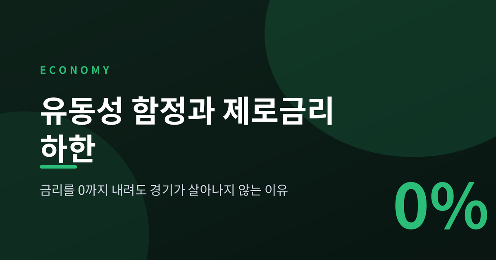
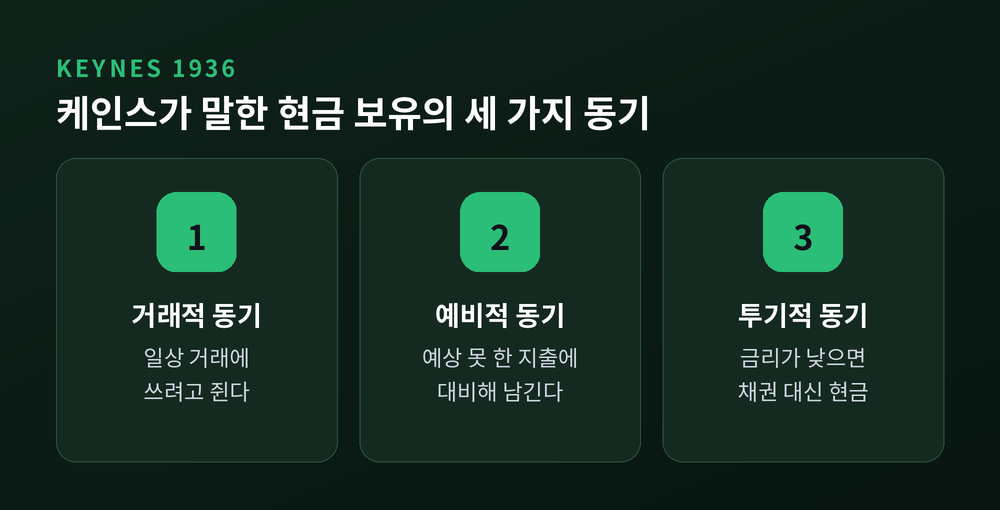
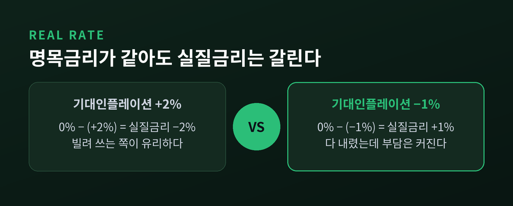
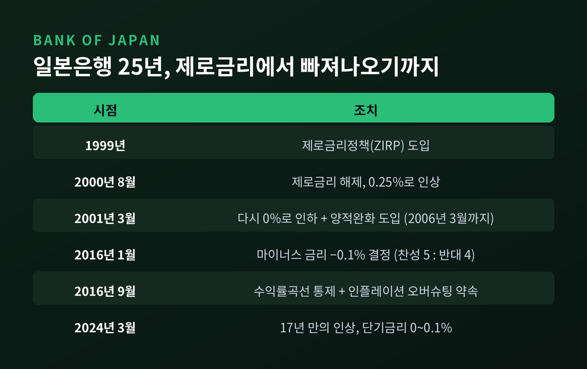
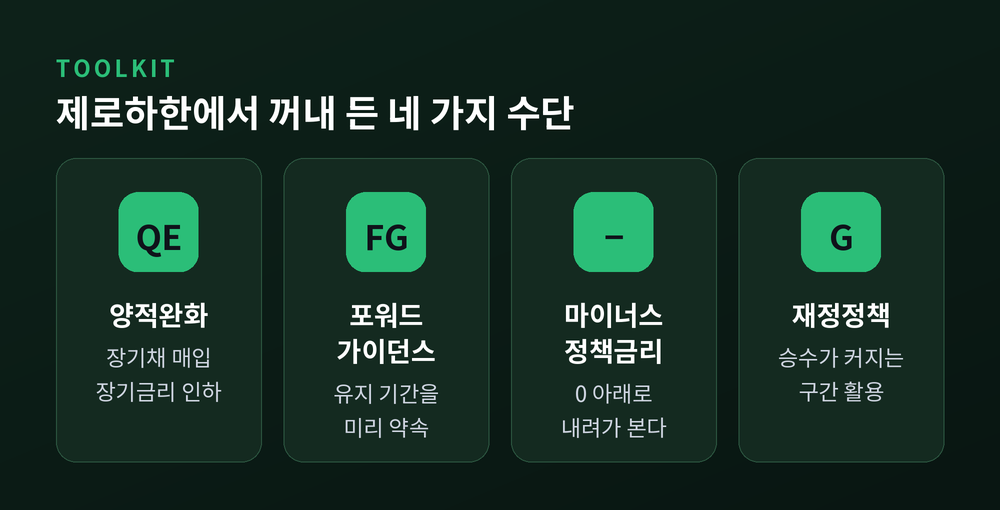
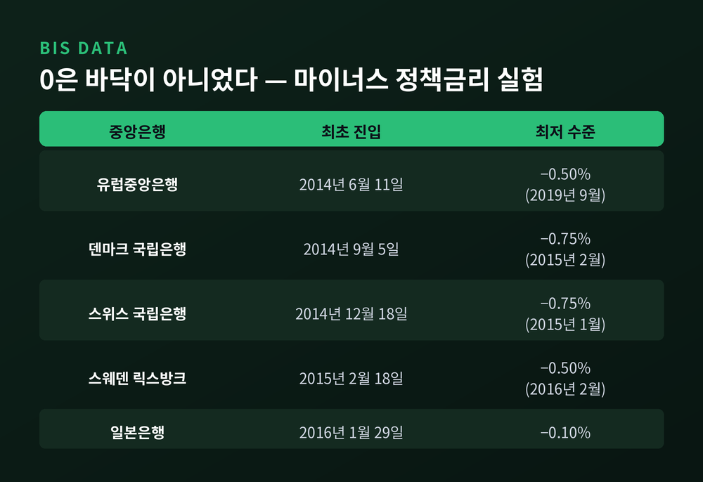
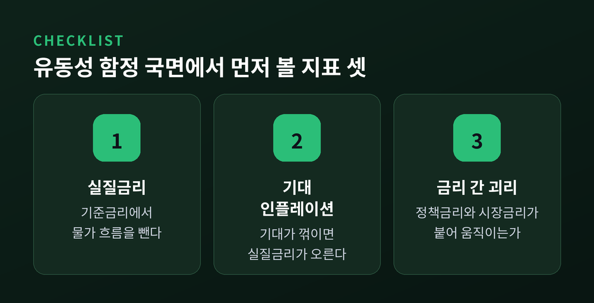

유동성 함정과 제로금리 하한, 금리 0에도 경기가 안 살아나는 이유

이번 글에서는 중앙은행이 금리를 0까지 내렸는데도 경기가 살아나지 않는 국면을 정리해 보겠습니다. 경제학에서 유동성 함정이라 부르는 상황입니다. 개념의 출발점부터 일본과 미국·유럽의 실제 대응, 그리고 지표를 읽는 방법까지 순서대로 짚겠습니다.
세 줄 요약
- 유동성 함정은 명목금리가 0 근처에 붙어, 통화량을 늘려도 금리가 더는 내려가지 않는 상태입니다. 케인스가 1936년에 제시한 개념입니다.
- 진짜 문제는 명목금리가 아니라 실질금리입니다. 물가가 떨어지면 명목금리가 0이어도 실질금리는 오히려 올라갑니다.
- 그래서 각국은 양적완화, 포워드 가이던스, 마이너스 금리, 재정지출로 우회했습니다. 장기금리를 낮춘 효과는 대체로 인정받지만, 물가와 실물로 얼마나 전달됐는지는 지금도 논쟁 중입니다.
케인스가 남긴 각주 하나
유동성 함정의 출발점은 1936년입니다.
존 메이너드 케인스가 『고용, 이자 및 화폐의 일반이론』에서 유동성 선호 이론을 내놓았습니다. 사람들이 왜 현금을 손에 쥐려 하는지를 세 가지 동기로 나눈 이론입니다. 거래적 동기, 예비적 동기, 투기적 동기입니다.
여기서 세 번째가 결정적입니다. 이자율이 아주 낮아지면, 채권을 사서 받을 이자보다 채권 가격이 떨어질 위험이 더 크게 느껴집니다. 그래서 그냥 현금을 들고 있게 됩니다.
케인스의 표현을 빌리면 이렇습니다. 이자율이 일정 수준 아래로 내려간 뒤에는 유동성 선호가 사실상 절대적이 되어, 거의 모든 사람이 그토록 낮은 이자를 주는 채권보다 현금을 선호하게 된다는 것입니다.

이 상태가 되면 화폐수요가 이자율에 대해 완전탄력적이 됩니다. 중앙은행이 돈을 아무리 풀어도 그 돈이 전부 현금으로 흡수될 뿐, 이자율은 꿈쩍하지 않습니다. 케인스는 이 국면을 유동성 함정이라 불렀습니다.
다만 한 가지는 짚고 넘어가야 합니다. 케인스 본인은 집필 당시 이런 상황의 역사적 실례를 알지 못한다고 밝혔습니다. 오랫동안 교과서 각주에 가까운 개념이었다는 뜻입니다.
IS-LM에서 LM곡선이 수평이 되는 구간
거시경제학 교과서는 이 상황을 그림 한 장으로 설명합니다.
평소의 LM곡선은 오른쪽 위로 올라갑니다. 소득이 늘면 거래용 화폐수요가 늘고, 그만큼 이자율이 올라가기 때문입니다. 그런데 이자율이 0 근처로 내려오면 화폐수요가 완전탄력적이 되면서 LM곡선이 평평해집니다.
수평인 LM곡선 위에서는 두 가지 일이 동시에 벌어집니다.
첫째, 통화정책이 힘을 잃습니다. 통화공급을 늘려도 이자율도 산출도 움직이지 않습니다.
둘째, 재정정책의 힘이 최대가 됩니다. 정부지출을 늘리면 승수효과가 온전히 소득에 반영됩니다. 소득이 늘어 화폐수요가 증가해도 이자율이 밀려 올라가지 않으니, 민간투자가 밀려나는 구축효과가 생기지 않기 때문입니다.
흥미로운 사실이 하나 있습니다. IS-LM 모형을 만든 존 힉스가 1937년 논문에서 이미 제로하한의 논리를 적어두었습니다. 화폐 보유 비용을 무시할 수 있다면 이자율이 0보다 크지 않은 한 돈을 빌려주기보다 그냥 들고 있는 편이 항상 이득이며, 따라서 이자율은 언제나 양수여야 한다는 문장입니다.
명목금리 제로하한(ZLB)에서 실질금리가 거꾸로 오르는 이유
여기가 이 글의 핵심입니다.
기업이 설비투자를 결정할 때 보는 숫자는 명목금리가 아닙니다. 물가 상승분을 뺀 실질금리입니다. 관계는 단순합니다.
실질금리 ≈ 명목금리 − 기대인플레이션
명목금리가 0%라도 사람들이 물가가 2% 오를 것으로 본다면 실질금리는 마이너스 2%입니다. 돈을 빌려 쓰는 쪽이 유리합니다.
문제는 반대 경우입니다. 명목금리가 0%인데 물가가 1% 떨어질 것으로 본다면, 실질금리는 플러스 1%가 됩니다. 중앙은행은 금리를 0까지 내려 할 수 있는 것을 다 했는데, 정작 기업이 체감하는 자금 조달 비용은 올라간 셈입니다.

여기서 악순환이 시작됩니다.
지출이 줄면 물가가 떨어집니다. 물가가 떨어지면 실질금리가 올라갑니다. 실질금리가 올라가면 지출이 또 줄어듭니다. 이것이 디플레이션 악순환입니다. 명목금리가 하한에 붙어 있으면 중앙은행은 이 고리를 끊을 지렛대를 잃습니다.
최근 연구는 여기에 한 겹을 더합니다. 실질 자연이자율, 이른바 중립금리 자체가 구조적으로 떨어지면 경제가 장기 지속형 유동성 함정에 빠질 수 있다는 장기침체 가설입니다. 완전고용으로 스스로 돌아가는 복원력이 사라지고, 한동안 마이너스 실질금리가 있어야만 균형이 회복된다는 진단입니다.
크루그먼의 1998년 일본 진단
1998년, 폴 크루그먼이 브루킹스 논문 한 편을 냈습니다. 제목은 「It's Baaack: Japan's Slump and the Return of the Liquidity Trap」입니다.
그의 정의는 간결합니다. 명목금리가 사실상 0이어서 통화정책이 장악력을 잃은 상태, 화폐와 채권이 완전대체재가 되어 통화량 자체가 무의미해진 상태입니다.
핵심 통찰은 따로 있습니다. 유동성 함정은 근본적으로 신뢰의 문제라는 것입니다.
시장은 중앙은행이 결국 물가안정으로 돌아갈 것이라고 믿습니다. 그래서 지금의 돈 풀기를 일시적인 조치로 받아들입니다. 일시적이라고 믿으면 기대물가가 움직이지 않고, 기대물가가 움직이지 않으면 실질금리도 내려가지 않습니다.
그래서 나온 처방이 유명한 한 문장입니다.
"중앙은행은 무책임해지겠다고 신뢰할 만하게 약속해야 한다."
풀어 쓰면 이렇습니다. 미래의 물가 수준을 더 높이겠다고 설득력 있게 약속하라는 것입니다. 지금 통화량을 늘리는 것만으로 부족한 이유는, 어긋나 있는 것이 통화량이 아니라 미래 기대물가와 현재 물가의 비율이기 때문입니다. 사람들이 미래 인플레이션을 믿기 시작하면 기대실질금리가 내려가고, 명목금리가 0이어도 오늘의 지출이 살아납니다.
이 논문에는 케네스 로고프의 공식 논평이 붙었습니다. 크루그먼 본인도 2018년에 20년 뒤 회고 글을 따로 썼습니다.
일본은 어디까지 가봤나
일본의 연표는 유동성 함정 논의의 살아 있는 교과서입니다.
물가부터 보겠습니다. 소비자물가는 1995년에 한 번, 1999년에 다시 마이너스로 돌아섰고, 이후 20년 동안 디플레이션이 임금 결정 행태에까지 스며들었습니다. 1992년부터 2002년까지 평균 변화율은 소비자물가 0.3%, GDP 디플레이터 마이너스 0.75%였습니다.
눈여겨볼 대목이 있습니다. 1998년 정점 이후 소비자물가의 누적 하락폭은 약 3% 정도에 그쳤습니다. 대공황식 물가 폭락이 아니었다는 뜻입니다. 일본이 겪은 것은 급락이 아니라 길게 이어진 저물가였습니다. 그 완만함이 오히려 대응을 늦췄습니다.

정책 대응은 단계적이었습니다.
1999년에 제로금리정책을 도입했습니다. 2000년 8월에는 경기가 회복됐다고 보고 이를 해제해 0.25%로 올렸습니다. 그러나 2001년 3월, 침체와 물가 하락이 다시 시작되자 금리를 0으로 되돌리고 양적완화를 도입했습니다. 이 양적완화는 2006년 3월까지 이어집니다.
2016년 1월 29일에는 마이너스 금리를 결정했습니다. 찬성 5 대 반대 4의 아슬아슬한 표결이었습니다. 금리는 마이너스 0.1%, 당좌예금을 세 계층으로 나눠 각각 다른 금리를 매기는 구조였고 2월 16일부터 시행됐습니다. 시장은 거의 예상하지 못했습니다. 발표 당일 10년물 금리가 9bp 넘게 떨어졌습니다.
같은 해 9월에는 수익률곡선 통제를 도입합니다. 단기금리는 마이너스 0.1%로 두고, 10년물 국채금리를 0% 내외로 유도하는 방식입니다. 여기에 인플레이션 오버슈팅 약속을 붙였습니다. 신선식품을 제외한 소비자물가가 2%를 넘어 안정적으로 유지될 때까지 본원통화 확대를 계속하겠다는 약속입니다. 크루그먼이 20년 전에 말한 그 "약속"이 제도로 옮겨진 장면입니다.
마침표는 2024년 3월 19일에 찍혔습니다. 일본은행이 17년 만에 금리를 올렸습니다. 마이너스 금리가 끝나고 단기금리는 0~0.1%가 됐습니다. 수익률곡선 통제와 ETF 매입도 함께 종료됐습니다.
제로하한에서 꺼내 든 네 가지 수단
2008년 12월 16일, 연준은 연방기금금리 목표를 0~0.25% 범위로 낮췄습니다. 단일 목표치가 아니라 범위를 제시한 것은 그때가 처음이었습니다. 미국이 제로하한에 도달한 날입니다.
이후 동원된 수단은 크게 네 갈래로 정리됩니다.

첫째, 양적완화입니다. 단기금리가 막혔으니 장기채를 직접 사서 장기금리를 끌어내리는 방식입니다. 연준 자체 평가에 따르면 1차 프로그램의 1조 7천억 달러 매입이 10년물 국채금리를 40~110bp 낮췄고, 2차 프로그램의 6천억 달러 매입이 추가로 15~45bp를 낮췄습니다. 연구자별 추정은 갈립니다. 개넌 등은 1차 효과를 36~82bp로 봤고, 크리슈나머시와 비싱요르겐센은 약 100bp로 더 크게 봤습니다. 다만 같은 연구진이 2차 효과는 16bp 정도로 작게 추정했습니다.
둘째, 포워드 가이던스입니다. 2012년 12월 연준은 이른바 에번스 룰을 채택했습니다. 실업률이 6.5% 아래로 내려가거나 물가상승률이 2.5%를 넘을 때까지 제로금리를 유지하겠다는 임계치 기반 약속입니다. 금리를 더 못 내리니, 대신 "얼마나 오래 유지할지"를 약속해 기대를 움직이는 방식입니다.
셋째, 마이너스 정책금리입니다. 0이 정말 바닥인지 시험한 시도입니다.
넷째, 재정정책입니다. 앞에서 본 수평 LM곡선의 논리가 여기서 되살아납니다.
0은 정말 바닥이었나 — 마이너스 금리 실험
국제결제은행(BIS)이 정리한 도입 시점은 이렇습니다.

유럽중앙은행이 가장 먼저 움직였습니다. 2014년 6월 11일 예금금리를 마이너스 0.1%로 내렸고, 이후 단계적으로 낮춰 2019년 9월에는 마이너스 0.5%까지 갔습니다. 덴마크 국립은행은 2014년 9월, 스위스 국립은행은 2014년 12월에 뒤따랐습니다. 스위스는 2015년 1월 유로 최저환율제를 폐지하면서 마이너스 0.75%까지 내려갔습니다. 스웨덴 릭스방크는 2015년 2월, 일본은행은 2016년 1월이었습니다.
캐나다은행은 2015년 12월, 정책금리 하한 추정치를 0.25%에서 마이너스 0.5%로 아예 바꿔 적었습니다.
왜 0이 절대 바닥이 아닐까요. 현금을 쌓아두면 0%는 보장받는다는 것이 제로하한 개념의 출발점입니다. 그런데 현금에는 운송비, 보관비, 보험료가 듭니다. 그래서 실효하한은 0보다 조금 아래 어딘가에 있습니다.
실제로 관찰된 결과는 절반의 성공이었습니다.
작동한 부분이 있습니다. 완만한 마이너스 금리는 단기자금시장에 평소와 똑같이 전달됐습니다. 네 나라 모두 하루짜리 금리가 정책금리를 따라 0 아래로 내려갔습니다. 우려했던 현금 대량 인출도 일어나지 않았습니다.
작동하지 않은 부분도 분명합니다. 소매 예금금리만은 0에서 멈췄습니다. 예금 이탈을 걱정한 은행들이 마이너스를 고객에게 전가하지 않았기 때문입니다. 스위스에서는 더 역설적인 일이 벌어졌습니다. 예대마진이 깎이자 은행들이 주택담보대출 금리를 오히려 올렸습니다.
BIS는 여기서 근본적인 딜레마를 지적합니다. 마이너스 금리가 가계·기업 대출로 전달되지 않으면 존재 이유가 사라지고, 전달되면 은행 수익성이 훼손됩니다. 어느 쪽이든 금융중개 모델 자체가 흔들립니다. 장기 부채를 가진 보험사와 연기금은 더 직접적으로 타격을 받습니다.
한 가지 더 있습니다. 실효하한은 고정된 값이 아닙니다. 마이너스 금리가 오래 갈 것으로 예상되면 사람들이 현금 보관 비용을 줄이는 방법을 찾아내고, 그만큼 실효하한이 위로 올라갑니다.
재정정책 승수는 왜 제로하한에서 커지는가
2009년, 크리스티아노·아이켄바움·리벨루가 「정부지출 승수는 언제 커지는가」라는 논문을 냈습니다. 전미경제연구소 워킹페이퍼 15394번이고, 2011년 『저널 오브 폴리티컬 이코노미』에 실렸습니다.
결론은 두 문장으로 요약됩니다.
명목금리의 제로하한이 구속력을 가질 때 정부지출 승수는 1보다 훨씬 커질 수 있습니다. 그리고 정부지출 가운데 명목금리가 0인 기간에 집행되는 비중이 클수록 승수가 커집니다.
앞에서 본 수평 LM곡선의 직관과 같은 이야기입니다. 이자율이 움직이지 않으니 구축효과가 없고, 그래서 승수가 온전히 작동합니다. 후속 연구들은 여기에 조건을 덧붙였습니다. 지출의 지속성이 승수 크기를 크게 좌우한다는 것입니다. 한 번 쓰고 마는 돈과, 몇 년에 걸쳐 쓰겠다고 예고한 돈은 효과가 다릅니다.
아직 끝나지 않은 논쟁
한쪽으로 기울여 정리하면 정직하지 않습니다. 양적완화를 둘러싼 평가는 지금도 갈립니다.
효과가 컸다는 쪽은 연준 자체 평가와 다수 실증연구를 근거로 듭니다. 장기금리를 실제로 낮췄다는 데는 대체로 합의가 있습니다.
효과가 제한적이었다는 쪽의 지적도 만만치 않습니다. 양적완화가 은행 대출을 의미 있게 늘리지 못했고, 늘어난 대출의 상당 부분이 은행 간 대출이었다는 분석이 있습니다. 준비금이 늘어난다고 은행에 수익성 있는 대출 기회가 새로 생기는 것은 아니라는 이야기입니다. 게다가 대부분 중앙은행이 준비금에 이자를 지급하기 시작하면서 대출 유인이 오히려 줄었습니다. 그 결과 준비금은 폭증했지만 대부분 선진국의 물가는 목표치를 계속 밑돌았습니다.
정리하자면 이렇습니다. 금리를 낮춘 효과에는 합의가 있고, 실물과 물가로의 전달 강도에는 합의가 없습니다. 2008년 이후 10년이 훌쩍 지났지만 이 논쟁은 아직 진행형입니다.
한국은 어떤 위치에 있나
한국은행은 제로금리를 경험한 적이 없습니다.
가장 낮았던 때가 코로나19 국면입니다. 2020년 1월 1.25%였던 기준금리를 3월 임시 회의에서 0.5%포인트 내리고, 5월에 0.25%포인트를 더 내려 사상 최저인 0.50%까지 낮췄습니다.
금리만 내린 것은 아닙니다. 국고채를 매입해 채권시장 경색을 풀었고, 2020년 4월에는 회사채담보대출제도를 새로 만들어 기업과 금융기관의 신용 경색에 안전망을 놓았습니다. 제로하한이 가까워질수록 금리 이외의 수단이 함께 동원된다는 점을 보여주는 사례입니다.
2026년 9월 현재 기준금리는 3.00%입니다. 올해 들어 두 차례 연속 올려 2.75%에서 3.00%가 됐습니다. 지금의 한국은 유동성 함정과는 거리가 있는 국면입니다.
그래도 이 개념을 알아둘 이유는 남습니다. 예전에는 유동성 함정이 교과서 각주였습니다. 지금은 주요국이 모두 한 번씩 통과한 실제 경로입니다. 그 차이가 이 글의 이유이기도 합니다.
지표를 읽는 다섯 가지 눈
투자 판단이 아니라 국면 판단을 위한 기준입니다.

첫째, 명목금리가 아니라 실질금리를 봅니다. 기준금리 숫자만으로는 통화정책이 완화적인지 긴축적인지 알 수 없습니다. 물가 흐름을 함께 놓아야 합니다.
둘째, 기대인플레이션을 봅니다. 크루그먼 논리의 핵심 변수입니다. 기대가 꺾이는 순간 실질금리가 조용히 올라갑니다.
셋째, 정책금리와 단기시장금리의 간격을 봅니다. 전달 경로가 정상이면 둘은 붙어서 움직입니다. BIS가 마이너스 금리의 작동 여부를 판정할 때 쓴 기준이기도 합니다.
넷째, 예금금리와 대출금리의 반응을 봅니다. 정책금리가 내려가는데 예금금리가 0에서 멈춰 있다면, 그 아래로는 정책이 내려가지 못하고 있다는 신호입니다.
다섯째, 중앙은행의 약속 문구를 봅니다. 일본은행의 오버슈팅 약속, 연준의 에번스 룰처럼 조건부 약속의 문장 자체가 기대를 움직이는 정책 수단입니다. 금리 숫자보다 문장이 중요해지는 국면이 실제로 있습니다.
끝으로 한 마디만 더 드리겠습니다.
유동성 함정이라는 말은 돈이 부족해서 생긴 문제처럼 들립니다. 실제로는 반대입니다. 돈은 넘치는데 그 돈이 움직일 이유가 없는 상태입니다. 그래서 중앙은행이 마지막까지 다루는 대상은 통화량이 아니라 사람들의 기대였습니다.
금리를 0까지 내리면 무엇이든 되느냐고 물으신다면, 그때부터가 진짜 시작이라고 답하겠습니다.